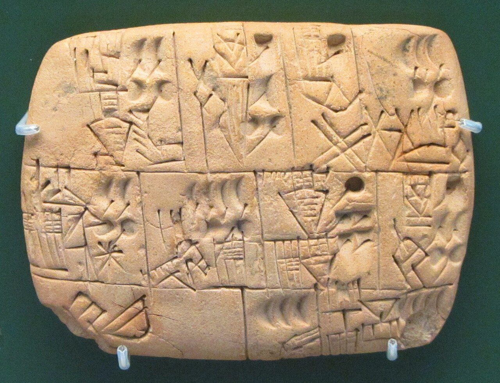
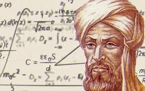
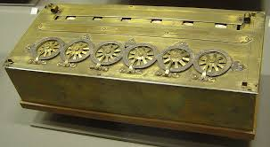

Début des maths.(Sumériens)
Le premier système de numérologie sumérienne repose sur une base
sexagésimale (base 60), ce qui signifie que les nombres sont
structurés autour de 60 unités. Cette numérologie était utilisée à
la fois pour les calculs astronomiques et administratifs. Les
Sumériens associaient des symboles et des valeurs à chaque chiffre,
et utilisaient des tablettes d'argile pour enregistrer leurs
calculs. Le chiffre 1 était souvent associé à l'unité, le
commencement, et symbolisait l'individu ou le point de départ d'un
cycle. Les autres chiffres, comme 2, 3 et 4, avaient des
significations liées à des concepts tels que la dualité, la
perfection ou l'équilibre.

Algorithme
L'algorithme est un ensemble d'instructions ou de règles permettant
de résoudre un problème ou d'accomplir une tâche spécifique de
manière systématique. Il est fondé sur une séquence d'étapes claires
et précises, souvent utilisées en informatique pour traiter des
données. Le terme provient du nom du mathématicien persan
Al-Khwarizmi, qui a formalisé les premières méthodes de calcul. Les
algorithmes peuvent être utilisés dans des domaines variés, de la
programmation à la résolution de problèmes mathématiques. Ils sont
la base de tous les processus informatiques modernes, comme ceux des
moteurs de recherche ou des applications mobiles.

Pascaline(première calculatrice)
La Pascaline est une des premières calculatrices mécaniques,
inventée par Blaise Pascal en 1642. Elle permettait d’effectuer des
opérations de base comme l'addition et la soustraction grâce à un
mécanisme de roues dentées. Chaque roue représentait une unité, une
dizaine, une centaine, etc., et permettait de visualiser le résultat
de manière mécanique. La Pascaline fut l'un des premiers instruments
à introduire l'idée de calcul automatique, mais elle avait des
limites, comme le fait de ne pas pouvoir multiplier ni diviser
directement. Néanmoins, elle a marqué un pas important dans
l'histoire des calculatrices et des ordinateurs.

Ada lovelace(premier programme informatique)
Ada Lovelace, née en 1815, est souvent considérée comme la première
programmeuse informatique. Elle a travaillé avec Charles Babbage sur
la machine analytique, un prototype de calculatrice mécanique, et a
conçu des algorithmes pour cette machine. Son travail est
particulièrement notable car elle a compris que la machine pouvait
être utilisée pour des tâches plus complexes que les simples calculs
numériques, anticipant ainsi la notion de programmation. En 1843,
elle publia des notes détaillant un algorithme pour calculer les
nombres de Bernoulli, marquant le début de la programmation
informatique. Ada Lovelace est une figure clé dans l’histoire de
l’informatique.

John von Neumann(architecture du première ordinanteur)
John von Neumann, né en 1903, était un mathématicien et
informaticien de renom. Il est considéré comme l'un des pionniers de
l'informatique moderne, notamment grâce à sa conception de
l'architecture de l'ordinateur, aujourd'hui appelée "architecture de
von Neumann". Cette architecture repose sur l'idée d'une mémoire
centrale partagée pour les données et les instructions, permettant
une programmation plus flexible et des calculs plus rapides. Von
Neumann a également contribué au développement de la théorie des
jeux, des mathématiques appliquées et de la physique nucléaire. Il a
eu une influence majeure sur les domaines scientifiques,
technologiques et militaires du XXe siècle.
Alan Turing(fondateur de l'intelligence artificielle)
Alan Turing, né en 1912, est l'un des pères fondateurs de
l'informatique et de l'intelligence artificielle. Il a développé la
machine de Turing, un modèle théorique qui a jeté les bases de
l'informatique moderne en définissant ce qu'est un calculable.
Pendant la Seconde Guerre mondiale, Turing a joué un rôle clé dans
la décryption des codes allemands, notamment ceux de la machine
Enigma, contribuant de manière décisive à la victoire des Alliés.
Son concept de "test de Turing", proposé en 1950, reste une
référence pour évaluer la capacité d'une machine à simuler
l'intelligence humaine. Turing a profondément influencé les domaines
de la logique, des mathématiques et de l'informatique.